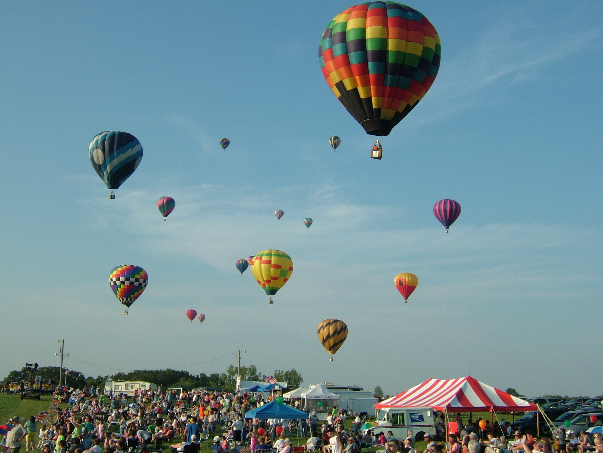
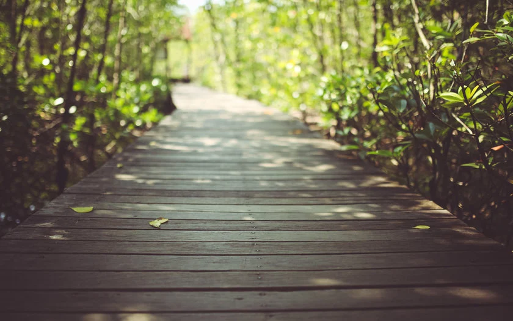

3 Passeios Incríveis
Balonismo em Boituva
O balonismo é um desporto aeronáutico praticado com um balão de ar quente. Possui adeptos em todo o mundo. No Brasil, o esporte começou a popularizar-se a partir dos anos 90. O balão é considerado uma aeronave assim como avião, helicópteros e outros. Por esta razão o balão deve ter uma matricula registado junto à ANAC, seu piloto deve possuir uma licença específico para a pratica do balonismo também emitido pela ANAC. Além disso o balão deve possuir uma apólice de seguro aeronáutico, um certificado de autorização de voo obrigatórios O balonismo vem se desenvolvendo principalmente por servir como uma poderosa ferramenta de mídia, atraindo anunciantes de todos os segmentos, ou seja; a presença nos balões de logotipos de grandes empresas e/ou campanhas publicitárias vem auxiliando no desenvolvimento e popularização do esporte.
Escuna em Paraty
Conheça as mais belas praias e ilhas da maravilhosa Baía de Paraty, com conforto e segurança a bordo das escunas Netuno. Este tour está entre as atrações mais procuradas da cidade histórica, excelente opção para todos os públicos. Ideal para quem gosta de belas paisagens e busca momentos de descanso e lazer. O passeio tem duração de 5 horas, com três paradas, sendo uma delas para almoço opcional (dentro da embarcação). Visitam-se de 3 à 4 paradas (dependendo da embarcaçaõ) permanecendo em torno de 30 a 40 minutos para banho, praticar snorkelling ou simplesmente desfrutar das belas paisagens.
Trilha em Guarapiranga
A Trilha da Vida é indicada pra qualquer pessoa, inclusive para quem não tem preparo físico e/ou crianças. Afinal, ela está mais para um passeio do que uma trilha propriamente dita. O legal é que para estimular ainda mais o contato com o meio ambiente, existe a possibilidade de fazer o percurso com os olhos vendados e pés descalços (sempre com a ajuda de um monitor). São apenas 65 metros, mas dizem que é uma experiência incrível.

Foto: Evento de Balões
Foto: Escuna em um dos passeios

Foto: Ponte na Trilha
Acesse meu Esporte
 Foto: Escuna em um dos passeios
Foto: Escuna em um dos passeios